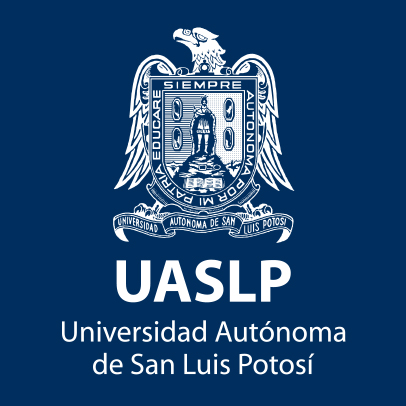

UASLP
Mapas
Facultades
Carreras
Facultades Zona Poniente
Facultad del Hábitat
Mapa Facultad del Hábitat
Carreras Facultad del Hábitat
Pagina Facultad del Hábitat
Facultad de Ingenieria
Mapa Facultad de Ingenieria
Carreras Facultad de Ingenieria
Pagina Facultad de Ingenieria
Facultad de Ciencias Químicas
Mapa Facultad de Ciencias Químicas
Carreras Facultad de Ciencias Químicas
Pagina Facultad de Ciencias Químicas
Facultad de Enfermería y Nutrición
Mapa Facultad de Enfermería y Nutrición
Carreras Facultad de Enfermería y Nutrición
Pagina Facultad de Enfermería y Nutrición
Facultad de Estomatologia
Mapa Facultad de Estomatologia
Carreras Facultad de Estomatologia
Pagina Facultad de Estomatologia
Facultad de Medicina
Mapa Facultad de Medicina
Carreras Facultad de Medicina
Pagina Facultad de Medicina